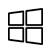
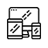
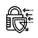

Если у вас возникли проблемы с компьютером.
Наша компания предлагает услуги компьютерной помощи в
Магнитогорске с выездом специалиста на дом. Также возможен выезд специалиста в пригород по договоренности.
Решаем абсолютно любые проблемы!
Компьютерный мастер приедет в удобное для вас время.
Быстро и профессионально устранит поломку.
Действительно низкие цены делают наши услуги доступными
для всех.
Список наших услуг:

- Windows:
- Восстановление работоспособности операционной системы Windows.
- Настройка Windows: настройка реестра, учетных записей пользователя и их компонентов.
- Оптимизация работы системы.
- Сеть Internet:
- Настройка сети интернет на компьютере.
- Организация локальной сети, настройка сетевых принтеров и доступа к папкам и файлам.
- Установка и настройка WI-FI роутера.
- Монтаж сетевой карты, установка драйвера устройства.
- Обжим интернет кабеля (витой пары RJ45).
- Помощь по различным вопросам:
- Помощь в выборе компьютера.
- Помощь в настройке программного обеспечения.
- Регистрация и восстановления доступа к страницам соцсетей.
- Ремонт компьютера в день обращения .

- Подключение устройств:
- Подключение звуковой карты, настройка колонок: 2.1/5.1/7.1
- Подключение МФУ, принтера, сканера.
- Подключение web-камеры. микрофона, беспроводной клавиатуры и мыши, сетевого wi-fi адаптера и настройка.
- Восстановление данных:
- Восстановление информации на жестком диске, флешке после вирусного заражения, случайного форматирования и т.д.
- Перенос данных с одного жесткого диска на другой.
- Удаление ненужных программ на диске.
- Работа с диском: исправление логических ошибок. Разбивка на разделы или объединение.
- Конвертация главной загрузочной области MBR в GPT и последующая настройка EFI.

- Удаление вирусов:
- Поиск и удаление вирусов
(вредоносного програмного обеспечения: трояны, руткиты, блокировщики, рекламный софт и т.д.).
- Обновление баз антивирусной программы.
- Расшифровка данных после заражения.
- Настройка антивируса, помощь в выборе.
Ремонт компьютера в день обращения
Осуществляем недорогой и качественный ремонт компьютеров на дому и в сервисном центре.
Теперь вам не нужно
вести технику в ремонтную мастерскую! Наш компьютерный мастер приедет к вам на дом или в офис и на месте
отремонтирует компьютер!
А если потребуется сложная диагнотика на стенде-мы бесплатно доставим ваш компьютер
к нам в сервисный центр для диагностики и ремонта. А затем привезём ваш компьютер в удобное для вас время
обратно.
Наши Услуги:
- Диагностика:
- Материнской платы.
- Модуля оперативной памяти.
- Монитора.
- CD/DVD-rom.
- HDD/SSD.
- Процессора.
- Блока питания ПК.
- Ремонт и замена:
- Ремонт материнской платы.
- Ремонт видеокарты.
- Замена северного, южного моста, кварцевого резонатора,
контроллера широтно импульсной модуляции, конденсаторов, транзисторов и т.д.
- Замена жесткого диска, привода оптических дисков.
- Замена RAM.
- Замена видеокарты.
- Замена корпуса системного блока.
- Сборка компьютера:
- Сборка продвинутого игрового компьютера на базе современных комплектующих.
- Сборка компьютера для офисных нужд (эконом вариант).
Ремонт ноутбуков по низким ценам
Производим ремонт ноутбуков любой сложности в Магнитогорске. Ремонтируем ноутбуки марок:
Samsung, Dell, HP, Sony, Aser, Asus, MacBook, Lenovo, MSI. Toshiba, DEXP и другие.
У нас имеется собственный склад запчастей и поэтому ремонт производим с сжатые сроки. У нас низкие
цены на комплектующие
Мы напрямую сотрудничаем с компаниями-поставщиками запасных частей
для ноутбуков.
Предоставляем фирменную гарантию на ремонт.
Наши услуги
- Чистка системы охлаждения ноутбука на дому или офисе.
- Цена за чистку ноутбука от пыли
- Ремонт материнской платы ноутбука.
- Ремонт видеокарты.
- Ремонт ноутбука после залития жидкостью.
- Замена компонентов системной платы.
- Замена разъёма питания ноутбука.
- Замена матрицы (экрана).
- Замена: жесткого диска, привода, клавиатуры, зарядного устройства, аккумуляторной батареи.
- Замена интегральных микросхем (BGA чипов).